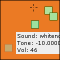
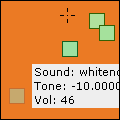

StockSynth. version beta 0.9.1.
|
||||||
Description
This programs allows to pile up several layers o sounds adding all the frequencies and constructing a new sound. You can easily change the amouth of each sound that goes into the final mix.
StockSynth. version beta 0.9.1.
Description This programs allows to pile up several layers o sounds adding all the frequencies and constructing a new sound. You can easily change the amouth of each sound that goes into the final mix.
|
|||||||||